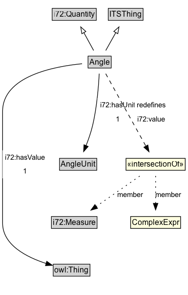

Angle¶
An angle defined by two lines.
Diagram¶

Specializations of Angle¶
| Class | Description |
|---|---|
| Bearing | The orientation of a line or movement, measured from north (0°) clockwise. |
Formalization for Angle¶
| Property | Constraint |
|---|---|
| i72:hasUnit | exactly 1 AngleUnit |
| i72:hasValue | exactly 1 xsd:decimal |
| i72:value | only ComplexExpr and i72:Measure |
| subClassOf | ITSThing |
| subClassOf | i72:Quantity |